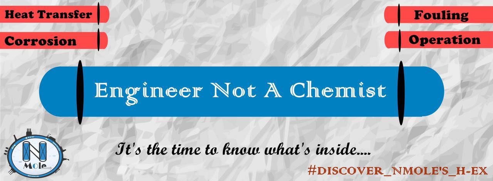

Back in 2016, N MOLE's first project was Shell and Tube Heat Exchanger.
We managed to design, fabricate, and operate a real industrial equipment for the first time.
After suffering a lot, we could find our way out to do something that completely inprobable to be achieved by students only.
The first step was the most difficult one, however, it was also a very remarkable one. The one that enforced every other step further.
Shell and Tube Heat Exchanger is one of the most common thermal industrial equipment and N MOLE till now has implemented this equipment 3 times
(in 2016, 2018, and finally 2019 in the mechanical branch).
We successfully could learn and coach how to design, fabricate, and operate a shell-and-tube heat exchanger from A to Z.
The process that was founded in our first project was and still adapted to perform and lead the way to this.
It all begins within N MOLE's staff members who complete all the following steps to qualify themselves to coach this experience and share its knowledge to others.
N MOLE coaches formualte a practical problem and struggle their way to its solution.
N MOLE coaches do it early with no guidance and you do it now with our guidance and care. But after all we all do the same process to gain similar valuable experience.
N MOLE's Project Recipe:
1. Acquiring and educating the skills to search on necessary technical information
2. Performing and supervising presentation skills to communicate our findings with the rest of the team
3. Brainstorming and cooperating to formulate our problems and possible solutions leading to solving our final case study
4. Procurement and purchasing parts and services needed to fabricate the equipment at the lowest possible cost
5. Fabricate the equipment and perfrom necessary pre-startup tests
6. Finally, the big day, the operation day where our dream comes true
7. Summarize our entire experience in a technical report (the proposal)
8. Perform a final presentation to communicate our work professionally to everyone.
9. Evaluating all participating teams regarding technicality, teamwork, and their ability to communicate their work.
10. Announcment of the winner team and celebrating the end of a matchless journey